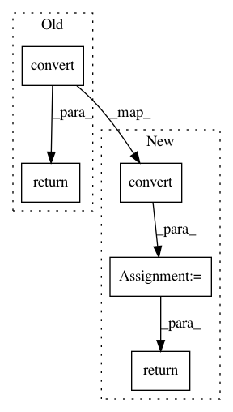

55ac7e53aea82d221b0919576199d1ef3d627f6d,torch/quantization/quantize_fx.py,,_convert_fx,#Any#Any#Any#Any#,404
Before Change
_check_is_graph_module(graph_module)
quantizer = Quantizer()
return quantizer.convert(graph_module, debug, convert_custom_config_dict, is_standalone_module)
def convert_fx(
graph_module: GraphModule, debug: bool = False,
convert_custom_config_dict: Dict[str, Any] = None) -> GraphModule:
After Change
_check_is_graph_module(graph_module)
quantizer = Quantizer()
quantized = quantizer.convert(graph_module, debug, convert_custom_config_dict, is_standalone_module)
preserved_attributes = convert_custom_config_dict.get("preserved_attributes", [])
for attr_name in preserved_attributes:
setattr(quantized, attr_name, getattr(graph_module, attr_name))
return quantized
def convert_fx(
graph_module: GraphModule, debug: bool = False,
convert_custom_config_dict: Dict[str, Any] = None) -> GraphModule:
In pattern: SUPERPATTERN
Frequency: 4
Non-data size: 5
Instances
Project Name: pytorch/pytorch
Commit Name: 55ac7e53aea82d221b0919576199d1ef3d627f6d
Time: 2021-01-11
Author: jerryzh@fb.com
File Name: torch/quantization/quantize_fx.py
Class Name:
Method Name: _convert_fx
Project Name: SheffieldML/GPy
Commit Name: 0c11ba0bf8967867433a2044af19440baf3b36df
Time: 2015-11-07
Author: ibinbei@gmail.com
File Name: setup.py
Class Name:
Method Name: read_to_rst
Project Name: matplotlib/matplotlib
Commit Name: 187f5da60767f648e37d974fbd96416fd912714e
Time: 2017-04-12
Author: vedant15114@iiitd.ac.in
File Name: lib/mpl_toolkits/mplot3d/axes3d.py
Class Name: Axes3D
Method Name: _validate_axis_limits
Project Name: home-assistant/home-assistant
Commit Name: 6dba05c79f189aaaed88b18c22cf27b1ff277068
Time: 2017-03-28
Author: ldjuggins@gmail.com
File Name: homeassistant/components/switch/wemo.py
Class Name: WemoSwitch
Method Name: today_energy_kwh